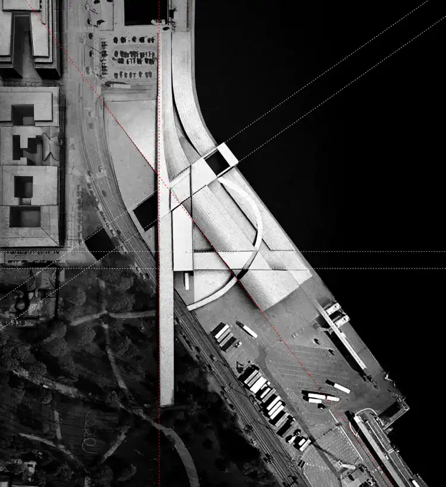

Musée Guggenheim Helsinki
Le projet n'ait pas encore été réalisé , voici une idée de ce à quoi l'architecture du musée Guggenheim de Helsinki pourrait ressembler, en s'appuyant sur les plans et les rendus disponibles à ce moment-là. L'architecture aurait probablement cherché à s'intégrer harmonieusement dans le paysage environnant tout en créant un impact visuel fort. Les matériaux modernes et innovants auraient probablement été utilisés pour refléter la nature dynamique et contemporaine du musée. Comme les autres musées Guggenheim, le bâtiment aurait probablement été conçu pour accueillir des expositions variées d'art contemporain et moderne. Des espaces polyvalents et flexibles auraient probablement été intégrés pour répondre aux besoins des diverses formes d'art et aux installations interactives.
L'architecture aurait probablement intégré des éléments de durabilité et d'innovation, alignés sur les normes contemporaines en matière de construction écologique. Cela aurait pu inclure des solutions énergétiques durables, des technologies de pointe et des espaces verts intégrés. Étant donné la proximité de la ville avec la mer, le musée aurait probablement exploité la relation avec l'eau. Des vues panoramiques sur la mer Baltique et des espaces extérieurs pour les visiteurs auraient pu être envisagés pour améliorer l'expérience globale.